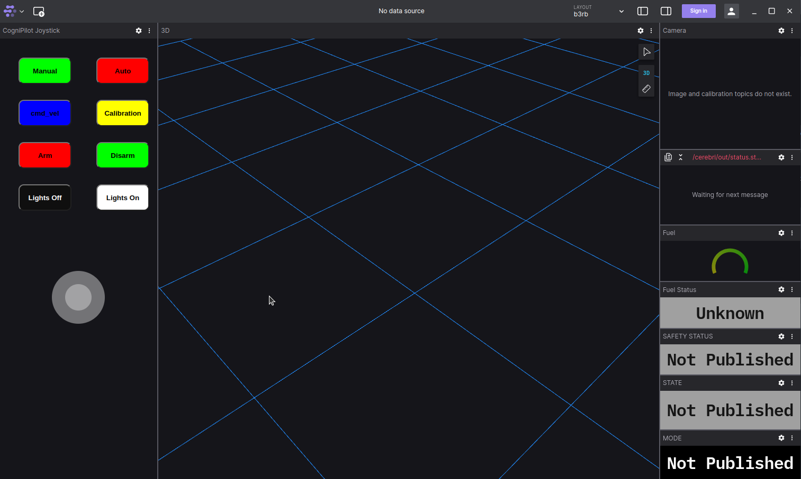
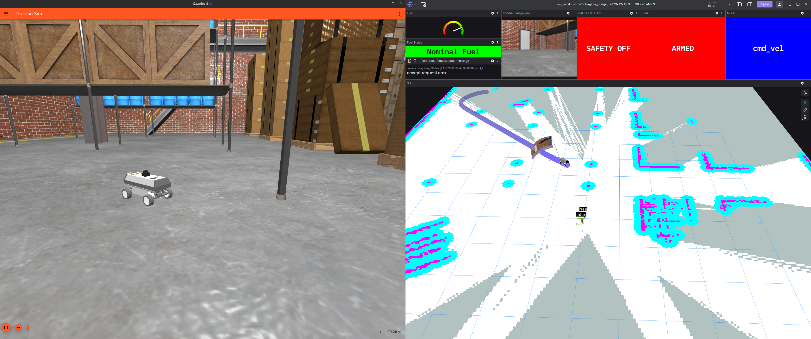

B3RB Simulation
Simulation uses gazebo garden to simulate sensors and physics in the "dream" worlds that connects to Cerebri running ontop Zephyr RTOS native_sim.
Before running simulation
Before running the simulation for the first time make sure to have first followed the installation for development computer guide. Once at building the workspace make sure to select 1. b3rb for the platform. This will also build Cerebri for native_sim so the section below "Build Cerebri for native_sim" can be skipped if the build_workspace script was just run. If other images have been built in Cerebri since running the script make sure to follow "Build Cerebri for native_sim".
Build Cerebri for native_sim
To build Cerebri for native_sim (posix) make sure the Zephyr RTOS build environment is up to date and that at some point previously the build_workspace script was run for b3rb.
If the build_workspace script was just run, the steps in this section can be skipped.
This section only needs to be run if different images have been built in Cerebri since having run the build_workspace script.
Build the Cerebri for native_sim and install it so it can be found.
Run Electrode
If using the foxglove backend for Electrode.
Make sure to have first run the build_foxglove script at some point and follow the prompts.
To visualize and control navigation run Electrode with the preffered backend set, the default and reccomended is foxglove.
Run Electrode with the foxglove backend for simulation.
Foxglove studio opened, how do I connect it to the simulation?
After launching electrode with only passing sim:=true
connect to it on ws://localhost:8765

My foxglove studio connected but it's not showing what I would expect it to, how do I load the b3rb layout?
- Click the
LAYOUTdrop down in upper right followed byImoport from file...
- Select the
b3rb.jsonfollowed by pressingOpenby navigatingHome > cognipilot > electrode > src > electrode > foxglove_layouts > b3rb.json
- The layout should now be present regardless of foxglove being connected to a websocket data source. 
Example of depot world simulation with electrode running foxglove.

Optionally run Electrode with the RVIZ 2 backend for simulation.
Electrode can be optionally run with the RVIZ 2 backend for simulation, however, it requires a physical joystick device for input.
ros2 launch electrode electrode.launch.py rviz2:=true sim:=true
Example of depot world simulation with electrode running rviz2.

Run B3RB SIL
The default dream world for B3RB is the basic map world.
My ROS 2 cerebri_bringup node is showing an error and is keeping simulation from running.
If the simulation launch script is throwing an error about cerebri_bringup make sure that cerebri is built, installed and sourced properly for native_sim.
If running on a machine with a powerful graphics card optionally run the more gaphics intensive depot world.